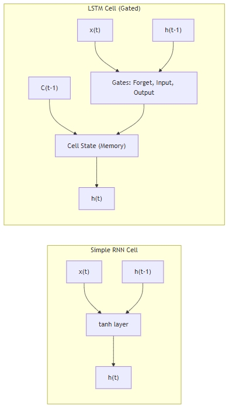

РОЗДІЛ 1. ОГЛЯД ЛІТЕРАТУРИ ТА АНАЛІЗ ПРЕДМЕТНОЇ ОБЛАСТІ
1.1. Інтелектуальні енергосистеми в міській інфраструктурі
1.1.1. Проблеми управління енергетичною інфраструктурою
Традиційні підходи до диспетчеризації не розраховані на коливання навантаження понад 30%, які стали характерними для енергосистеми України в умовах дефіциту потужностей. Без впровадження інструментів передбачення диспетчер не може завчасно попередити аварійне відключення, оскільки отримує сигнал про аварію вже за фактом перевантаження вузла мережі.
Для вирішення цих проблем у роботі пропонується використання алгоритмів глибокого навчання на основі даних з IoT-датчиків (Internet of Things) підстанцій. Ключовим елементом збору даних є інтелектуальні лічильники AMI (Advanced Metering Infrastructure) [40] – це інтегрована система обладнання та каналів зв'язку, що забезпечує двосторонній обмін даними між енергокомпанією та споживачем. Використання AMI дає змогу збирати телеметрію з інтервалом 15–60 хвилин, що є достатнім для побудови короткострокових прогнозів.
Процеси збору та аналізу даних у реальному часі сприяють автоматичному формуванню векторів телеметрії (навантаження, напруга, температура) для кожного вузла мережі. Світовий досвід впровадження інтелектуальних систем (на прикладі Сінгапуру та Барселони), а також локальні дослідження кліматичних факторів для м. Києва [39], підтверджують, що впровадження інтелектуальних технологій дає змогу оптимізувати енергоспоживання на рівні муніципалітету.
В енергетичному секторі останнім часом починають використовувати підходи інтелектуальних мереж (Smart Grid) [7, 31], які базуються на двосторонньому обміні електроенергією та даними.
graph TB
subgraph UI["Рівень представлення (Streamlit)"]
direction LR
A1["KPI Панель"]
A2["ML Прогноз"]
A3["ГІС Карта"]
end
subgraph CORE["Інтелектуальний шар"]
direction LR
B1["LSTM v3\npredict_v2.py"]
B3["Фізичний рушій\nphysics.py"]
B4["Векторизатор\n(Sliding Window)"]
end
subgraph DATA["Шар даних (OLAP)"]
direction LR
C1[("PostgreSQL\nNeon Cloud")]
C3["Цифровий двійник\nСимуляція сенсорів"]
end
subgraph DEVOPS["DevOps Шар"]
direction LR
D1["GitHub Actions\nCI/CD"]
D2["Docker\nКонтейнер"]
end
UI -->|"Запит даних"| CORE
CORE -->|"SQL SELECT"| DATA
C3 -->|"SQL INSERT телеметрія"| C1
B1 -->|"Результати ШІ"| UI Рис. 1.1. Типова багаторівнева архітектура IoT-платформи. Джерело: згенеровано автором на основі програмного коду.
Рис. 1.1. Типова багаторівнева архітектура IoT-платформи. Джерело: згенеровано автором на основі програмного коду.
Основними компонентами таких систем є інтелектуальні пристрої обліку (AMI), пристрої фіксації фазових параметрів (PMU – Phasor Measurement Units) та системи накопичення енергії (ESS – Energy Storage Systems). Ці технології дають змогу автоматично коригувати розподіл навантаження та запобіти аварійним ситуаціям без прямого ручного втручання диспетчерського персоналу.
graph TD
subgraph Local ["💻 LOCAL ENVIRONMENT"]
DG["data_generator.py\n(Симулятор)"]
end
subgraph Cloud ["☁️ CLOUD INFRASTRUCTURE (Render)"]
DB[(PostgreSQL\nOLAP Database)]
Vect["vectorizer.py"]
Pred["predict_v2.py"]
UI["main.py\n(Dashboard)"]
end
DG ==>|"Telemetry Push"| DB
DB <-->|"Data Exchange"| Vect
Vect --> Pred
Pred --> UI Рис. 1.2. Концептуальна схема Smart Grid та інфраструктури передачі даних.
Джерело: згенеровано автором на основі програмного коду.
Рис. 1.2. Концептуальна схема Smart Grid та інфраструктури передачі даних.
Джерело: згенеровано автором на основі програмного коду.
На відміну від традиційних мереж, Smart Grid підтримує двосторонній обмін даними між підстанцією і диспетчерським центром. Це дає змогу автоматично коригувати розподіл навантаження без ручного втручання. Значною проблемою залишається феномен різкого падіння чистого навантаження вдень та його стрімкого зростання ввечері, що вимагає точного прогнозування.
1.1.3. Технологія цифрових двійників в енергетиці
Згідно з міжнародними стандартами ISO 23247 [36] та IEEE 1547 [37], цифровий двійник являє собою динамічну програмну копію фізичного активу. У межах цієї роботи реалізовано цифровий двійник підстанції, який на основі поточного навантаження моделює теплові процеси в трансформаторах. Це дає змогу розраховувати температуру масла, концентрацію розчиненого водню (\(H_2\)) та інтегральний показник технічного стану (Health Score). Такий підхід базується на стандартах IEEE C57.91 [38] і дає змогу перейти до обслуговування обладнання за його фактичним технічним станом.
1.2. Аналіз параметрів прогнозування
1.2.1. Часові ряди енергоспоживання
Математичний опис енергоспоживання як часового ряду базується на його декомпозиції (розподілі на окремі складові) [3, 13]. Навантаження \(y(t)\) можна представити як суму тренду \(T(t)\), добової \(S_d (t)\) та тижневої \(S_w (t)\) сезонності, циклічних коливань \(C(t)\) та випадкового шуму \(\epsilon(t)\):
Де кожна складова відповідає за певний характер змін: - тренд \(T(t)\) відображає довгострокову тенденцію зміни навантаження (наприклад, через ріст міста); - сезонність \(S(t)\) описує періодичні коливання (піки споживання вранці та ввечері); - циклічність \(C(t)\) пов'язана із сезонними змінами погоди (обігрів взимку, охолодження влітку); - шум \(\epsilon(t)\) – випадкові непередбачувані фактори та похибки вимірювань.
1.2.2. Обґрунтування вибору методу прогнозування
Для прогнозування навантаження обрано архітектуру рекурентних нейронних мереж LSTM (Long Short-Term Memory) [11], яка працює з нелінійними послідовностями. Основною особливістю LSTM є наявність вентильних механізмів, що дають змогу моделі "пам'ятати" довгострокові закономірності та ігнорувати короткостроковий шум телеметрії. Математично робота комірки LSTM описується системою рівнянь, де вентиль забування (Forget Gate) \(f_t\) визначає частину пам'яті, що підлягає видаленню:
Вентиль входу (Input Gate) \(i_t\) та кандидат на оновлення стану \(\tilde{C}_t\) формують нові дані для оновлення поточної клітинки:
Після оновлення стану клітинки (Cell State) \(C_t\), яке обчислюється як сума відфільтрованого попереднього стану та нового кандидата:
Вентиль виходу (Output Gate) \(o_t\) формує фінальне значення прогнозу навантаження на наступний період:
Така здатність до виявлення складних часових залежностей дає змогу моделі прогнозувати навантаження без ручного створення сотень статистичних ознак [10]. Для підвищення стабільності навчання моделі використовується оптимізатор Adam [15], а функцією втрат обрано Huber Loss, яка поєднує переваги середньоквадратичної та абсолютної похибок. Вона є стійкою до аномальних викидів телеметрії, що часто виникають в умовах апаратних збоїв реальних електромереж [14]:
1.3. Технології аналітичної обробки даних
У цьому проєкті реалізовано гібридну аналітичну архітектуру на базі PostgreSQL (Neon Cloud) [18]. Використання хмарної СУБД дає змогу виконувати складні агрегаційні запити по історичних даних телеметрії за мінімальний час, що необхідно для оперативного моніторингу та формування вхідних векторів для ШІ-моделі.
1.4. Обґрунтування вибору методу прогнозування
1.4.1. Порівняння архітектурних рішень
На відміну від стандартних рекурентних мереж, архітектура LSTM спеціально розроблена для подолання проблеми зникаючого градієнта, що забезпечує стабільне навчання на довгих послідовностях даних.
graph LR
subgraph RNN["Simple RNN Cell"]
R_in["x(t)"] --> R_tanh["tanh layer"]
R_prev["h(t-1)"] --> R_tanh
R_tanh --> R_out["h(t)"]
end
subgraph LSTM["LSTM Cell (Gated)"]
L_in["x(t)"] --> L_gates["Gates: Forget, Input, Output"]
L_prev_h["h(t-1)"] --> L_gates
L_prev_c["C(t-1)"] --> L_state["Cell State (Memory)"]
L_gates --> L_state
L_state --> L_out_h["h(t)"]
end
Рис. 1.3. Порівняльна характеристика архітектур RNN та LSTM. Джерело: згенеровано автором на основі програмного коду.1.4.2. Класичні статистичні методи
Моделі ARIMA (AutoRegressive Integrated Moving Average) є базовим інструментом для аналізу стаціонарних часових рядів. У загальному вигляді модель ARIMA(p,d,q) описується рівнянням [39]:
де \(y_t\) – спостережуване значення, \(L\) – оператор зсуву, \(d\) – порядок диференціювання, \(\phi\) та \(\theta\) – параметри авторегресії та ковзного середнього. Для енергетичних даних частіше застосовують розширення SARIMA (Seasonal ARIMA), яке враховує сезонні коливання \(S\):
Проте ці методи вимагають стаціонарності ряду та погано адаптуються до різких змін навантаження, що виникають внаслідок непередбачуваних зовнішніх факторів.
1.4.3. Класичні методи машинного навчання
Традиційні методи машинного навчання (ML), зокрема градієнтний бустинг (XGBoost, LightGBM) та випадковий ліс (Random Forest) [8, 25], здатні враховувати нелінійні зв'язки. Однак для їхньої роботи необхідне ручне створення лагових ознак (lag features), що ускладнює масштабування системи. Класичне ML не має вбудованої пам'яті про послідовність, що знижує його здатність моделювати складні динамічні процеси в енергомережі.
1.4.4. Методи глибокого навчання
Для практичної реалізації у цьому проєкті обрано рекурентні мережі LSTM. Їхні вентильні механізми дають змогу автоматично виявляти складні часові залежності без необхідності формувати сотні ручних ознак [10]. У літературі архітектури типу трансформерів також демонструють високу точність [1], однак їх розробка та обчислювальна оптимізація для систем реального часу виходять за межі цієї роботи.
Таблиця 1.1. Порівняльна характеристика методів прогнозування енергоспоживання
| Критерій | ARIMA | Класичне ML | LSTM (Обрано) |
|---|---|---|---|
| Врахування нелінійності | Низьке | Середнє | Високе |
| Робота з контекстом | Відсутня | Обмежена | Вбудована |
| Швидкість навчання | Дуже висока | Висока | Середня |
| Стійкість до викидів | Низька | Середня | Високе |
ВИСНОВКИ ДО РОЗДІЛУ 1
У цьому розділі проведено аналіз предметної області та огляд наукової літератури за темою дослідження. Проаналізовано сучасні підходи до управління інтелектуальними енергомережами та обґрунтовано необхідність переходу від реактивного управління до інструментів передбачення на основі технологій глибокого навчання.
Встановлено, що традиційні статистичні методи, такі, як наприклад, ARIMA, та класичні алгоритми машинного навчання не здатні добре враховувати складні нелінійні залежності та довгострокові шаблони споживання без складної попередньої обробки даних. Показано, що впровадження технології цифрових двійників у поєднанні з системами AMI дає змогу отримувати точні дані для моніторингу технічного стану вузлів у реальному часі.
Методологічно обґрунтовано вибір рекурентних нейронних мереж архітектури LSTM як найбільш релевантного інструменту для короткострокового прогнозування навантаження. Це дає змогу автоматизувати процес виявлення аномалій та забезпечити диспетчерський персонал інформацією для попередження аварійних ситуацій в енергосистемі.